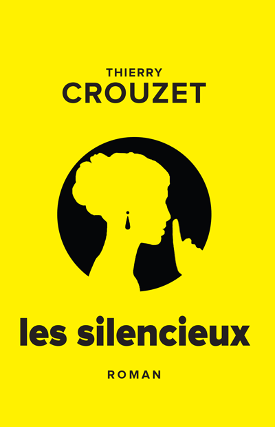

ROMAN Un #MeToo au masculin
Ce roman noir se déroule au début des années 1970 dans une ville portuaire du Midi. Le héros se souvient de ses douze ans quand il a redoublé sa sixième dans un établissement privé. Il nous raconte comment sa vie a basculé lorsqu’une pionne s’est éprise de lui.
Mots clés : #MeeToo #1970s #Thriller #Noir #France #Italie #Suisse #BetaMax
Les Silencieux sont en vente sur Opensea.
Licence
- Propriété intellectuelle Thierry Crouzet reste l’auteur inaliénable de Les Silencieux (Œuvre). Son nom doit rester associé à toute utilisation de l’œuvre, qu’elle soit commerciale ou non, par l’acheteur (Acheteur).
- Royalties L’auteur renonce à exploiter ou diffuser l’œuvre dans sa version française. Si l’acheteur revend l’œuvre sous forme de NFT, l’auteur reçoit 10 % de ses bénéfices. Si l’acheteur commercialise l’œuvre sous forme de livres électroniques ou imprimés, il partagera ses bénéfices avec l’auteur. L’acheteur n’a pas le droit de diffuser gratuitement l’œuvre.
- Revente Si l’acheteur revend l’œuvre sous forme de NFT, il transfère au nouvel acheteur ses privilèges et devoirs vis-à-vis de l’auteur (respect de la propriété intellectuelle, versement des royalties). Il perd tout droit sur l’œuvre, même s’il conserve le droit de la lire.
- Format La totalité du texte est encodé dans l'image de couverture haute définition (il suffit de l'ouvrir avec un éditeur de texte) et l’acheteur déverrouille un lien (Unlockable Content) vers un fichier archive contenant l’œuvre au format PDF, EPUB, DOCX et MD. Le design de la couverture n’est pas contractuel et pourra être repensé par l’acheteur s’il désire promouvoir l’œuvre. Elle ne fait pas partie de l’œuvre elle-même. L’œuvre peut-être corrigée avec l’autorisation et la collaboration de l’auteur.
- Traduction L’auteur se réserve le droit de traduire l’œuvre et de commercialiser les traductions selon les modalités exposées ci-dessus.
- Adaptations L’acheteur ne détient pas les droits d’adaptation (cinématographiques, radiophoniques, BD…).
Fiche produit
- 160 pages, 169K signes
- ERC-1155 token : 51916585730158572235051487169527023365538550989906184714965107612488959000577
- Blockchain : Ethereum
- ISBN papier : xxx-x-xxxx-xxxx-x
- ISBN ebook : xxx-x-xxxx-xxxx-x